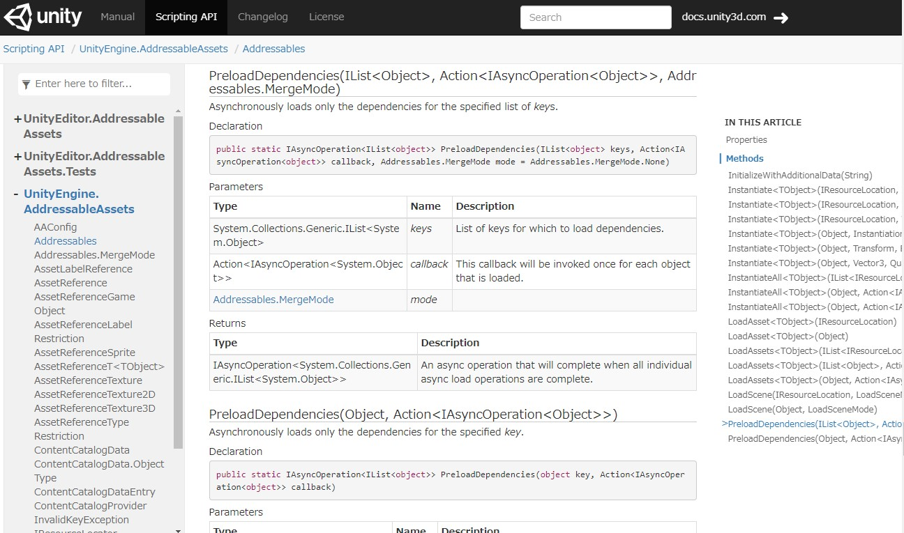
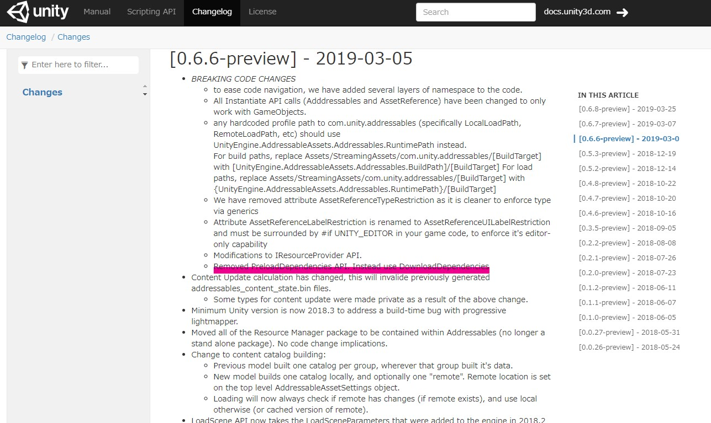
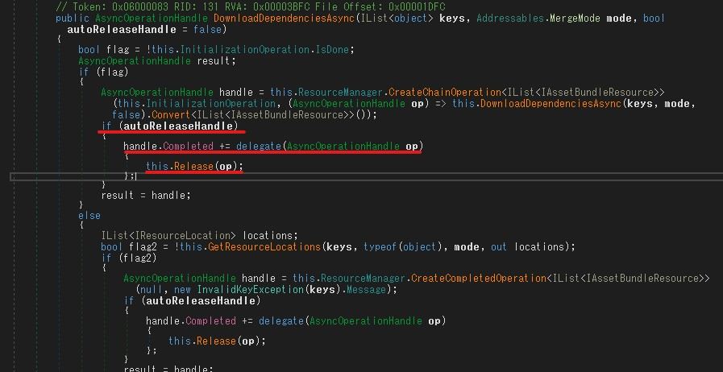

Addressable Assetsで事前ロードしたい
したかった人生だった。from Addressables 1.2.4
調べると Addressables.PreloadDependencies というのを使うらしいのだが
メソッドが存在しない🤬🤬🤬🤬
てか公式のドキュメントにも

って思いっきり書いてるんだけどどうやら存在しない。
こういう時は何処かのバージョンで誰かが消したので（怒）チェンジログを見る。
公式ドキュメントなど既に役に立たない。

てかv0.6.6で色々と破壊的変更しすぎじゃないですかねぇ？
ドキュメント更新追いついてないしノリでリファクタリングしていない？何があったの？
ということで Addressables.DownloadDependencies が同等機能との事。
var op = Addressables.DownloadDependenciesAsync("preload"); // preloadラベルが付いた全部のAssetを準備する
op.Completed += (res) => { Debug.Log("Preload Complete!"); };
いや・・・Addressablesってファイルがリモートとは限らないからPreloadDependenciesの方が良いと思うんだけどな🤔
実際にメモリにロードする訳ではないからDownloadなんだろうか。
アドレス先を知らなくて良い(のが特徴)のに、
メソッド名がダウンロード（リモートにあることを明示する）のはなんか。
さて、使い方としては引数にラベルを指定すると
そのラベルが振られたアセットバンドル(が依存しているすべてのbundle)を全部ロードしようとするので
いわゆるソシャゲの事前AssetBundleのロードに使える。
どのデータを起動時にロードするべきとか、ステージ開始時にロードすべきとか超絶簡単に管理できるので
そこら辺はAssetBundleを比べて恐ろしいほどに便利。
「アセットは基本ダウンロードさせたいけど🤔
これはチュートリアルですぐ使うからアプリにビルドインしときたい😘」
とか
「これらはステージ1始まる時にダウンロードさせたい あっ😮このボイスも追加で😁」
とか
予めトリガーラベルを振っておけば、後はプログラマ介さずにイケるからマジ一瞬で世界がヤバい。
ちなみに DownloadDependenciesAsync は第二引数(autoReleaseHandle=false)があって、
まぁドキュメントも役に立たないので逆アセンブルしたんだけど、

って感じでReleaseするデリゲートが仕込まれてるので
AssetBundleの事前キャッシュ（いわゆる起動時とか）に使うなら true にしても良さそう。
直後に使う事が確定しているならリリースしない方が二度ファイルロードしないで済む気がする。
Profilerで挙動を確認した感じ、Dependencies Chainが解放される。
自分でReleaseしてもおそらく問題ない。
(というかfalseの場合はやらないと複数回呼び出すとDependencies Chainがリークする)
var op = Addressables.DownloadDependenciesAsync("preload", true); // これは
op.Completed += (res) => { Addressables.Release(res); }; // 裏でこれが仕込まれる
しかし、一次情報が古すぎる😂